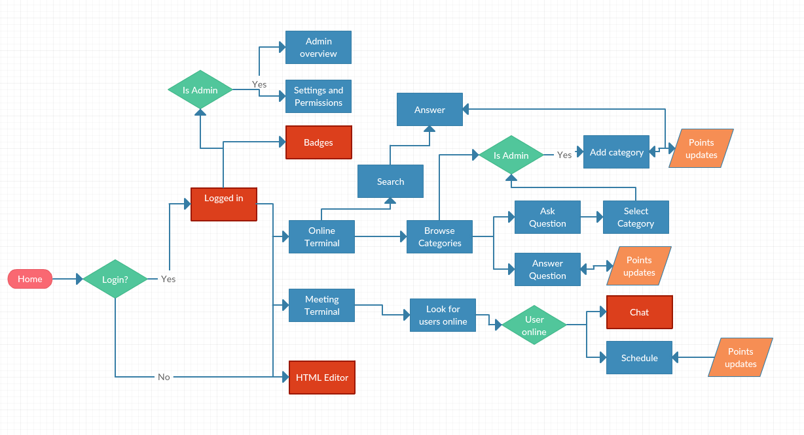
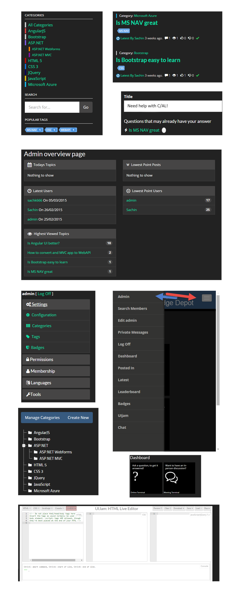

A simple, sleek, and intuitive website to get all the questions answered. That was the story we had, when we developed this application within period of 2 weeks for a Hackathon. I lead the team, while owning the UI design completely.
GOAL
The goal of the Hackathon was to instigate innovation, promote design thinking and simplicity to get an usable application, which is nippy, easy to integrate and completely responsive. The idea was to create a knowledge platform where an user can seek any answer he needs, based on the green architecture concept (reuse of existing data). More detail can be guaged by watching the short video above, which I created.
TEAM
Team size: 4
My role: Survey, usability evaluation, design and development
Research
This was a hackathon, but that doesn't mean a UX designer can be sacrilegious! In other words, I need to understand users and deliver great experiences. We started with a survey!
SURVEY TO IDENTIFY PAIN POINTS
The goal of any software is for people to use. Understanding people is core principle of User-centered design. We collected data from the potential users (employees).
85%of the employees who responded in the firm, insisted on usage of green architecture (re-use code)
70% of the participants complained there was no way to access a knowledge base to look for within firm
An in-house HTML editor was sought after, to use edit instantly, test and save to share within firm.
Ability to look for SPOCs within firm and easy way to communicate and seek answer was preferred by participants
A way to count points for answering questions and helping peers was preferred.
One stop shop to communicate, discuss and share was common theme in the open ended question of survey.
{kind=link}
Design
We had goal and vision in place, all that was left was to brainstorm and start ideating.
CONCEPT CREATION
We wore our designer cap and started scribbling on every available paper out there!
USER FLOW
We needed to sort-out our huge mess of a design. We created a draft for the user flow. This was intereated as a team and were ready to move on to the next phase.
{kind=link}
QOC DESIGN MODEL
{kind=link}
QOC (Questions, Options, and Criteria) is used for design space analysis. It identifies the key design problems as questions and possible answers to questions as options. In addition, QOC uses criteria to explicitly describe the methods to evaluate the options, such as the requirements to be satisfied or the properties desired. The options are linked with criteria positively or negatively and these links are defined as assessments.
The image depicts some example QOC that we discussed in order to design the solutions. This was then subjected to Heuristic evaluation and Cognitive walkthrough to identify issues, and were consequently fixed.
Development
Now that our design was ready, we needed to implement our design. (Yes, of course this was a working prototype. It was Hackathon for a reason!)
UI BASED ON QOC

{kind=link}
Based on the decisions and refinement after testing, the functionalities were implemented using Lucene as Search engine, ASP.NET MVC as framework, Bootstrap as UI framework and Azure as hosting site.
Quality Assurance
TESTING
Ideally we need to write Unit testing, but this was a hackathon, and rigor is of more importance. A quick manual testing was conducted by the peers and other developers in the team to ensure the integrity of the application.
TAKEAWAY
Since it was a 2 weeks of coding and hacking competition, we tried our best to keep the design Human-Centred. Can anyone do that to create a realiable application? May be, will it be the best design? May be. But what we came up with was fully functional web application with tremendous features and user-tested interaction. This was responsive, sleek and extremely useful.
We explored a new set of design rationale named as QOC, which was instrumental in arriving at design decision. This project with few modification was finally implemented for a real client project ($$$)!
TOOLS
Asp.NET, Visual Studio, Model-View-controller Concept, Javascript and JQuery, HTML 5, CSS3 - Bootstrap and several .net based and javascript based plugins.